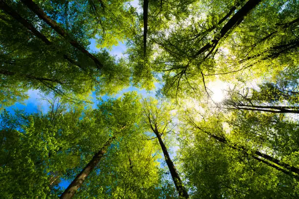

"The Unsung Canopy" represents the massive, overlooked universe of nature poetry that thrives quietly outside the mainstream literary spotlight. Just as the highest leaves of a forest shelter the earth and absorb the elements while remaining completely invisible to those walking on the ground below, thousands of eco-poems quietly sustain human empathy, heal personal grief, and document our changing planet without ever receiving public acclaim.
Few people know about this rich literary ecosystem because modern culture and corporate publishing favor loud, fast-paced commercial trends over the slow, quiet reflection that environmental verse demands. Furthermore, historical gatekeepers have routinely marginalized working-class, indigenous, and early eco-writers either dismissing their vital protest art as simple landscape descriptions or treating it as outdated nostalgia. Because these works are rarely pushed into the spotlight or included in standard school curricula, this vibrant network of voices remains hidden from the public eye, leaving its deep psychological and planetary truths largely unread.
Poems:
Floating Island The Nature The Rainbow The Call of the Wild